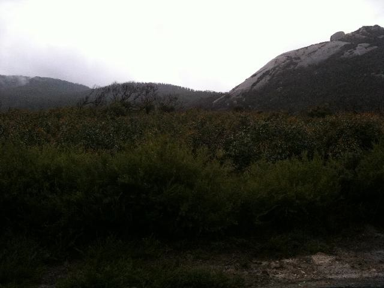

{kind=link}
One of the research activities I conducted with Parks Victoria involved a mobile diary study. There are a couple of great introductions to the topic if you’re interested, but broadly; diary studies are a way of having participants reveal their daily practices through guided self-reporting. Mobile diary studies do this through the use of a mobile phone. The benefits of this: users typically already have a device, and these can be used to prompt participants for insights on their activites, real-time photos, etc.
In the context of my research, I opted to use a mobile diary study in order to gain an understanding of the practices of Park Rangers in relation to the places they manage. A mobile diary study seemed great for this as it allowed people to make entries whilst in the park itself – using the places and locations they work in and travel through as points of reflection. On top of this, the period during which the study ran was in the aftermath of a severe flood, and the recovery effort was worth investigating.
This post is about how the activity revealed more about their practice than I had released it would. What it highlighted was the deep connections people had to areas of the park – and how different these connections were for each individual participant. It is these connections that revealed a personal geography of the park; a type of mental map of the park that was emotive and subjective rather than abstract and representational.
Study Design
The dairy study was run using Evernote on a set of iPhone 3GS’s. Six rangers at Wilson’s Promontory were asked to participate, and their roles were carefully chosen in relation to their level of experience in the park, their typical duties, and the length of time they had spent in the park. I met with each participant in person to talk them through the use of the application, and to set up the expectations for the study. I also left a cheat sheet with them, detailing some “entry inspirations” that doubled as guidance on the types of entries I was looking for.
Download the cheat sheet I gave participants.
As you’d expect, we did some practice entries in our kick-off session, and I was careful to voice the usual reassuarances: there’s no right or wrong; even what you think is boring is interesting to me, etc.
Using Evernote was beneficial in a lot of ways. Originally I had planned on making my own diary study tool, and whilst Reuben and I managed to produce a working prototype, we abondoned it due to the difficulty in synching the data. Evernote’s built in web service was fantastic during the study as I was able to monitor entries in real-time. Each of the phones had a data allowance, and Evernote was set to automatically upload new entries as they were made. At the end of each day I would check what had been entered by each participant, and this was a great way of monitoring progress.
Feedback and encouragement was typically sent every 1 or 2 days via SMS to the study phone, and I have no doubt that this had a positive effect on the outcome of the study. In total, there were over 90 geo-tagged and time-stamped entries comprising of audio, video and photography – a very rich account of what had happened during and around the flood recovery.
Revealing personal geographies
Rather than thinking of the Park as a single geographical space, it can be thought of as a combination of different productions of space, including individuals unique interpretations of it. This implies that what is defined as a “park” is a multilayered entity that is constructed out of a number of different perspectives. This ‘relational’ notion of a space is grounded in cultural geography, but has recently begun to appear in human-computer interaction and design generally.
By asking people to carry the phone with them, it revealed the importance people placed on certain locations in the park; it helped reveal a participant’s subjective experience of the park. Each participant’s collection of diary entries provided one slice out of many that contribute to the Park’s overall meaningfulness. This ‘slice’ is what I’m defining as a personal geography here.
It showed/created a narrative for each participant as they moved through the flood recovery – their personal geography showed how certain areas in the park loomed large for them. By recording their movements and thoughts, it gave insight into their park, whilst also providing an enduring record of the historical event of the flood.
Evernote’s API allowed me to plot out their movements throughout the study period, but also to augment those movements with recorded media. These narratives formed a type of qualitative map – a “personal geography” that represents the relationship between that person and the park, during a particularly severe natural event. You can see some very basic results from this is older blog posts.
Forming Histories
The goal of the study was to gain an insight into the daily practices of park rangers. As such, participants were asked to talk about details of their days they went about it. Unsurprisingly then, most entries were topical and timely to the day they were recorded; they were about difficulties encountered, conversations had or in some cases, were even notes to the participant themself for a later time. However, a number of entries were reflective and interpretive in nature.
What this highlighted was that certain staff desired a platform to share an interpretation of places filtered through their experience. They were reflecting on locations in-situ, and when asked to talk about those places, they began interpreting them in relation to current and past events and their own experiences working within them – particularly reflecting on what had changed over time. They were recording a history of that place that was tinged with their own lived experiences of it: the diary study (end evernote) were their platform, and the place itself was a tool for reflection.
{kind=link}

Most of these reflective entries were oral in nature, however they were supported by photos in some cases. What the diary study provided participants with was a platform for constructing oral histories. They were providing new knowledge about and insights into the past through an individual biographical account, and these accounts represented an interplay between the past and present, the individual and the social. Boiled down to its essence, what rangers were doing was performing an act of memory.
So, inadvertantly, by giving rangers a tool to report about their day, what actually occured was something deeper: it acted as a prototype of a system that allowed them to construct histories.
Research methods as systems prototyping
This surprising use was evident all through my research, not just with the diary study. More on that another time – I wanted to write this here to highlight (first) that Evernote is a fantastic tool for conducting mobile diary studies, and (second) that clever incorporation of technology in the design of your research (as very different to interface design!), can provide you insights and inspirations for future designs of actual systems.
{kind=link}
{kind=link}
{kind=link}
{kind=link}